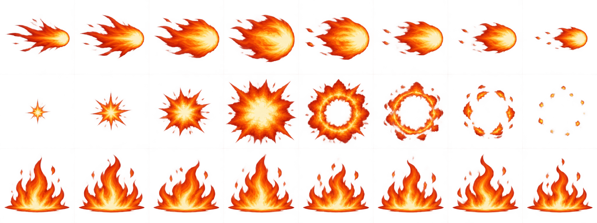
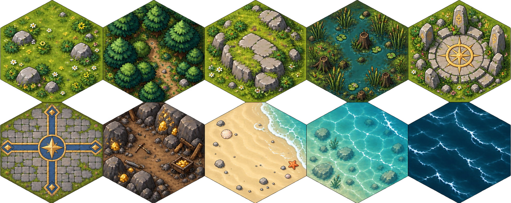

Four faction representatives in the Arcane Vanguard style. Heads, bodies, capes, limbs, and equipment are separate movable 2D pieces.
Current representatives: Infernal · Pyromancer, Kingdom · Knight, Vampires · Bloodblade, Undead · Necromancer. Wilds, Iron Clan, Arcane Order, and other units retain their existing art.
Play a faction test match · Test this faction · Return to game
Loading the character catalog…
Projectile · Impact · Ground fire. Three rows, eight frames per row.
These are source visual-effect frames, shown separately for inspection. Their labels describe the character's existing abilities; artwork alone does not add powers or guarantee every effect is connected to live gameplay.

Effects image could not load. Reload the page after the asset is available.
Grass · Forest · Hill · Swamp · Shrine · Keep · Mine · Sand · Shallow water · Deep water
